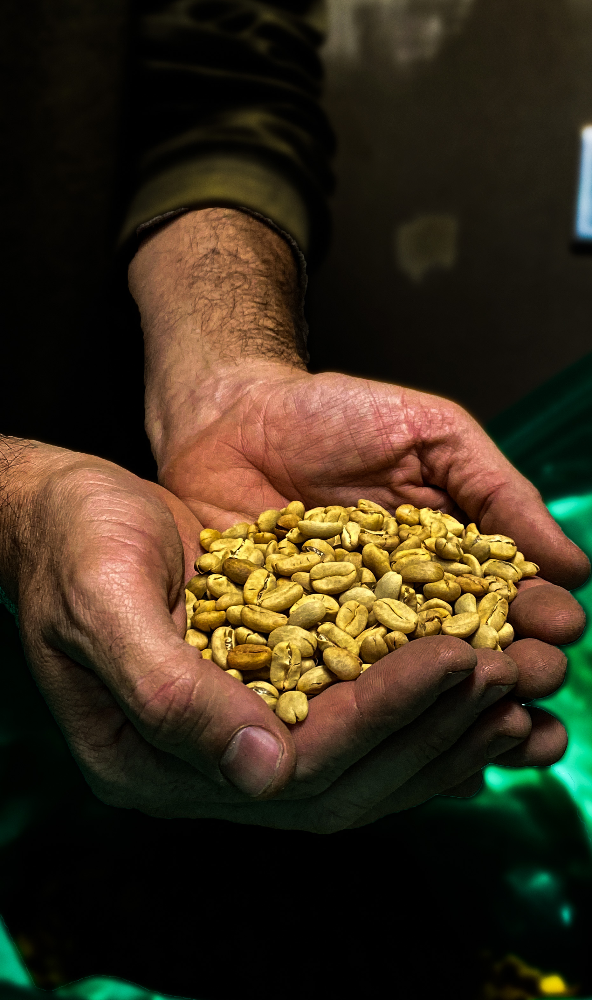

Descubre un refugio acogedor donde el arte del café se encuentra con la tranquilidad de un entorno natural. En cafetería Sendero, cada taza es una experiencia única que celebra la calidad, el sabor y el ambiente relajante.
Disfruta de un diseño interior inspirado en la naturaleza
Disfruta de un ambiente acogedor que combina materiales orgánicos, colores cálidos y formas suaves, pensados para brindarte una experiencia relajante y armoniosa.
Cada detalle ha sido cuidadosamente seleccionado para evocar la tranquilidad de un paseo al aire libre, integrando elementos decorativos que recuerdan la textura de la madera, la frescura del follaje y la calma de los paisajes naturales.
Escucha el relajante burbujeo de nuestras máquinas de espresso
Déjate llevar por el sutil sonido del agua transformándose en café mientras el vapor danza en el aire. Cada burbuja marca el inicio de una experiencia única, acompañada del suave y constante molido de granos seleccionados con esmero. Un ritual que anuncia el comienzo de algo especial.
Déjate envolver por el irresistible aroma de granos recién tostados
Desde el primer respiro, un torrente de fragancias cálidas y profundas invade los sentidos. Notas terrosas, dulces y ligeramente amaderadas se mezclan en el ambiente, evocando paisajes de montaña y campos colombianos al amanecer. Un aroma que no solo se percibe, se siente en el alma.

Prueba una variedad de cafés con perfiles de sabor únicos
Cada taza es una exploración sensorial: desde notas afrutadas y cítricas que despiertan el paladar, hasta matices de cacao, nuez y caramelo que acarician el gusto. Nuestros granos, cuidadosamente seleccionados y tostados, revelan una amplia gama de sabores que reflejan la riqueza de la tierra colombiana y la dedicación detrás de cada cosecha.
Siente la calidez de nuestras tazas
Abraza el instante en que tus manos encuentran el calor reconfortante de una taza recién servida. La espuma, ligera y cremosa, acaricia los labios como una promesa de bienestar. Es un momento íntimo y pausado, donde el tiempo se detiene para disfrutar, sorbo a sorbo, de una experiencia auténtica.